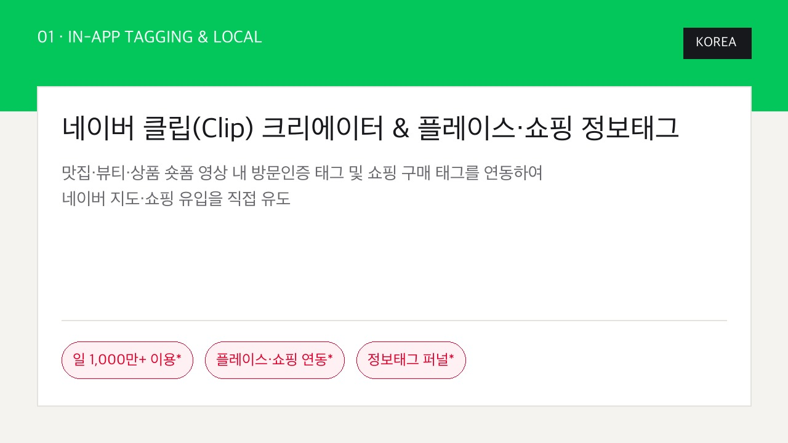
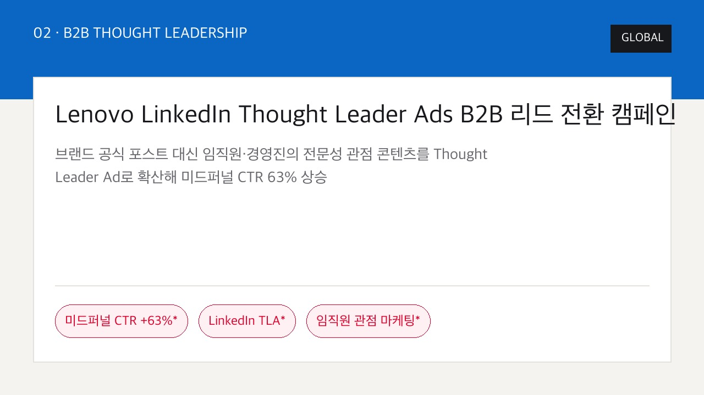
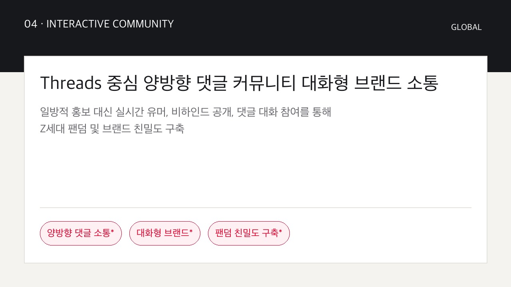
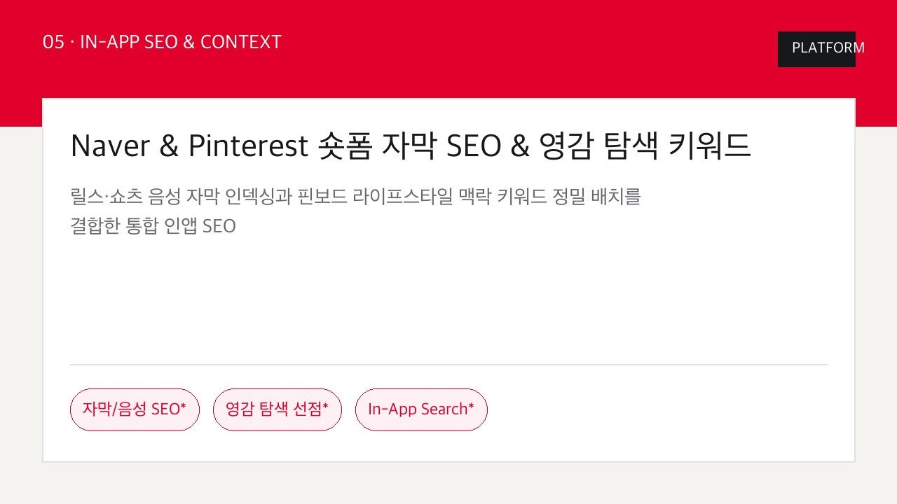
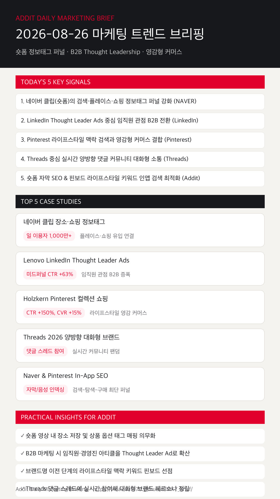

01
네이버 클립(숏폼)의 검색·플레이스·쇼핑 정보태그 연계 퍼널이 강화된다
단순 영상 시청을 넘어 장소 저장 및 상품 구매 태그를 연동하여 지도·쇼핑 유입을 직접 연결합니다. (NAVER)
네이버 클립 장소·쇼핑 정보태그 퍼널, Lenovo LinkedIn Thought Leader Ads, Holzkern Pinterest 영감 커머스 및 Threads 양방향 대화 소통 전략을 한눈에 확인합니다.
단순 영상 시청을 넘어 장소 저장 및 상품 구매 태그를 연동하여 지도·쇼핑 유입을 직접 연결합니다. (NAVER)
브랜드 공식 포스트 대신 임직원·경영진의 전문 아티클을 광고로 증폭해 미드퍼널 CTR을 대폭 상승시킵니다. (LinkedIn)
영감 탐색 비주얼과 다중 컬렉션 광고를 연동해 브랜드 탐색에서 구매까지의 이동 단계를 대폭 축소합니다. (Pinterest)
일방적 홍보 대신 실시간 유머, 비하인드 공개, 댓글 대화 참여를 통해 브랜드 팬덤 및 친밀도를 정립합니다. (Threads)
릴스/쇼츠 오디오·자막 인덱싱과 핀보드 라이프스타일 맥락 키워드 배치를 융합해 탐색 유입을 극대화합니다. (Addit)

KOREA일 이용자 1,000만 명 돌파와 함께 숏폼 내 방문인증 태그 및 상품 옵션 태그를 직접 매핑해 네이버 지도·쇼핑 유입을 직접 유도했습니다.

GLOBAL기업 공식 페이지 대신 C-Level 및 기술 전문가의 신뢰도 높은 글을 타겟 광고로 증폭해 미드퍼널 CTR 63% 상승을 달성했습니다.
 GLOBAL
GLOBAL선물 추천 및 스타일링 맥락 키워드를 선점하고 다중 제품 시각화를 제공해 CTR 150% 증가 및 전환율(CVR) 15% 상승을 기록했습니다.

GLOBAL스레드 댓글 소통, 유머 밈, 비하인드 공개로 Z세대의 참여를 끌어내며 친밀도 높은 소통형 브랜드 페르소나를 정립했습니다.

PLATFORM인앱 검색 알고리즘 변화에 맞춰 대사 자막 및 맥락 핀보드를 사전 정비하여 발견부터 전환까지 최단 동선을 구축했습니다.
조회수 중심 운영에서 벗어나 숏폼 첫 2초 핵심 제시 후 네이버 지도 장소 저장 및 상품 옵션 확인 태그 클릭을 관리합니다.
네이버 클립 도움말 보기 →B2B 타깃 마케팅 시 단순 기업 공식 홍보글보다 C-Level 및 경영진의 전문 아티클을 Thought Leader Ad로 확산해 신뢰를 형성합니다.
LinkedIn TLA 케이스 보기 →커머스 브랜드 마케팅 시 제품 고유명사 외에 타깃이 검색하는 라이프스타일 핀보드 맥락에 비주얼 소재를 정밀 배치합니다.
Pinterest Holzkern 사례 보기 →일방적 브랜드 메시지 발신이 아닌 댓글 스레드 대화에 적극 참여하여 소통형 브랜드 페르소나를 수립합니다.
Threads 2026 리포트 보기 →영상 대사 음성 자막 처리 및 인앱 키워드 태깅을 사전 정비하여 인앱 검색(In-App Search) 상단 노출을 차지합니다.
네이버 보도자료 보기 →B2B 리드 생성과 임직원 Thought Leader Ads 퍼널 구축 가이드를 검토합니다.
LinkedIn Business 바로가기 →영감형 커머스와 라이프스타일 컬렉션 쇼핑 캠페인 사례를 분석합니다.
Pinterest Business 바로가기 →
마케팅 성과는 단순 영상 노출량에서 숏폼 정보태그 퍼널 매핑, 임직원 B2B Thought Leadership 증폭, 라이프스타일 영감 커머스 축소의 유기적 조화로 완성됩니다.
{kind=link}